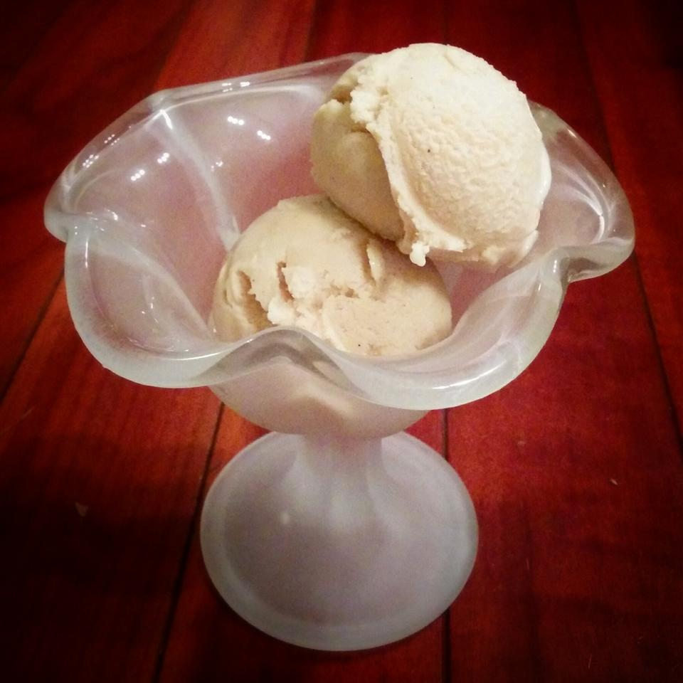

The Cook
Caramelized Peach Ice Cream

Description
This has become one of your favorite ice creams. The rich flavor of the caramelized, roasted peaches and brown sugar makes it a perfect treat on a hot summer night. If you're not a big fan of cinnamon, leave that out. You will find that it adds a nice depth of flavor but some may find that it overwhelmsthe subtle flavors of the peach.
Ingredients
- 4 large ripe peaches, halved and pitted
- 2 tablespoons unsalted butter, or as needed
- 1/4 cup dark brown sugar
- 1 teaspoon ground cinnamon, or to taste
- 3 cups milk
- 1/2 vanilla bean, split lengthwise (Optional)
- 3 large egg yolks
- 1/2 cup white sugar
- 2 tablespoons cornstarch
- 1 teaspoon vanilla extract
Steps
- Preheat the oven to 400 degrees F (200 degrees C).
- Generously butter the cut portion of each peach half and place cut-side down into a baking pan.
- Bake in the preheated oven until mostly cooked and bubbly, about 20 minutes. Turn peaches over with a spatula and sprinkle brown sugar and cinnamon into the juicy halves.
- Cover the pan with foil and continue to bake until peaches are fully cooked and sugar is mixed with butter and juices form a caramel in the pan, about 15 more minutes.
- Meanwhile, heat milk and split vanilla bean in a large pan over medium heat, stirring to avoid any burning. Keep at a low simmer.
- Whisk together egg yolks, white sugar, cornstarch, and vanilla extract in a bowl until well combined.
- When peaches are done, remove skins (and eat them, they're delicious!). Add peeled peaches and all the caramelized juices into the hot milk. Stir to combine and simmer for about 10 minutes.
- Remove vanilla bean and scrape the seeds into the hot milk.
- Use an immersion blender to puree the peaches and the milk. Be careful as the mixture is really hot.
- Slowly whisk 1/2 cup of the hot milk mixture into the egg yolk mixture. Add more hot milk slowly to temper the mixture.
- Remove milk from heat and allow to cool to 170 degrees F (76 degrees C). Whisk in egg yolk mixture and return to low heat, whisking constantly, until a custard forms, 5 to 10 minutes.
- Strain custard through a sieve. Mixture will be really thick, so working it through with a silicone spatula can take up to 10 minutes as you press and stir.
- Pour mixture into an ice cream maker and freeze according to manufacturer's instructions, about 20 minutes. Transfer to an airtight container and freeze until firm, about 4 hours.
Get the recipe on the original page
Go back to homepage